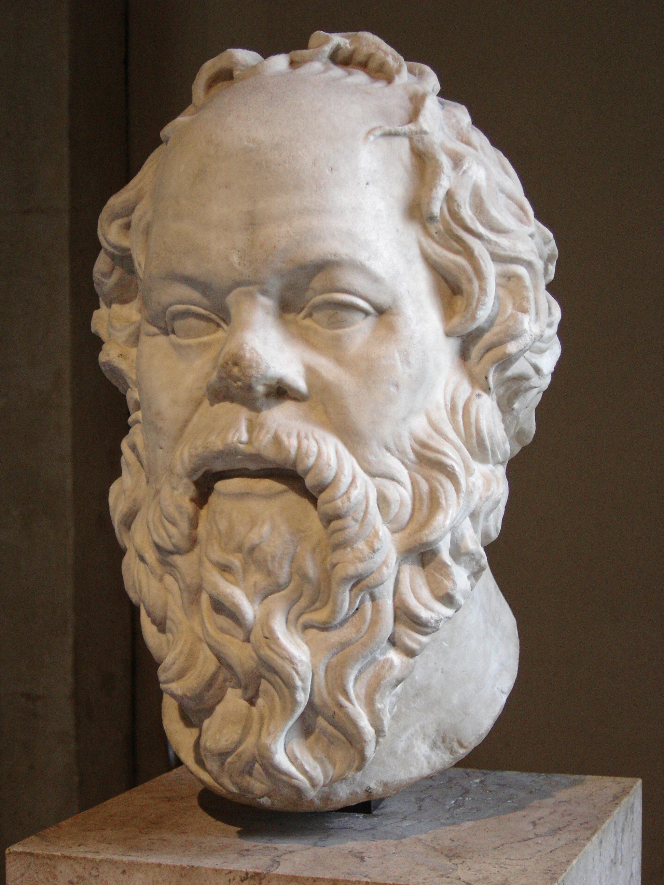

Sócrates (en griego antiguo, Σωκράτης, Sōkrátēs; Alopece, Atenas, Antigua Grecia, 470 a. C. - ib., 399 a. C.) fue un filósofo clásico griego considerado como uno de los más grandes, tanto de la filosofía occidental como de la universal. Fue maestro de Platón, quien tuvo a Aristóteles como discípulo, siendo estos tres los representantes fundamentales de la filosofía de la Antigua Grecia. Otros discípulos suyos son Antístenes, Aristipo y Esquines.
No hay ninguna evidencia de que Sócrates haya publicado algún escrito de su autoría. Detalles de su vida son conocidos gracias a tres fuentes contemporáneas: los diálogos de Platón, las obras de Aristófanes y los diálogos de Jenofonte. En los diálogos de Platón se encuentran los relatos más completos de Sócrates que han sobrevivido desde la antigüedad. Sin embargo, quedan preguntas con respecto a la distinción entre el Sócrates de la vida real y la representación de Sócrates platónico.
Pasó gran parte de su vida generando discusiones con todo el mundo en Atenas, tratando de determinar si alguien tenía alguna idea de lo que estaba hablando, especialmente cuando el tema tratado era importante, como la justicia, la belleza o la verdad. No dejó ningún escrito, pero inspiró a muchos discípulos. En su vejez, se convirtió en el foco de la hostilidad de muchos de la ciudad quienes veían a los sofistas y a la filosofía como los destructores de la piedad y moral de la ciudad; y fue condenado y ejecutado en 399 a. C.l.
Platónn. (en griego antiguo: Πλάτων, Plátōn; Atenas1 o Egina,2 c. 427-347 a. C.)31 fue un filósofo griego seguidor de Sócratesn. 2 y maestro de Aristóteles.4 En 387 fundó la Academia de Atenas,5 institución que continuaría a lo largo de más de novecientos añosn. 3 y a la que Aristóteles acudiría desde Estagira a estudiar filosofía alrededor del 367 a. C., compartiendo unos veinte años de amistad y trabajo con su maestro.n. 4
Platón participó activamente en la enseñanza de la Academia y escribió sus obras, siempre en forma de diálogo, sobre los más diversos temas, tales como filosofía política, ética, psicología, antropología filosófica, epistemología, gnoseología, metafísica, cosmogonía, cosmología, filosofía del lenguaje y filosofía de la educación. A diferencia de sus contemporáneos, se cree todo el trabajo de Platón ha sobrevivido intacto.6
Mediante mitos y alegorías, Platón desarrolló sus doctrinas filosóficas. En su teoría de las formas o ideas, sostuvo que la realidad sensible es solo una "sombra" de otra más real, perfecta e inmutable. De ese mundo proviene el alma humana, que es inmortal pero esta se encuentra "encarcelada" en el cuerpo; y las ideas universales, las cuales son innatas en ella y percibidas por la razón, donde "conocer" es "recordar" (anamnesis). También es considerado como uno de los fundadores de la filosofía política al considerar que la ciudad justa estaría gobernada por "filósofos reyes". Intentó también plasmar en un Estado real su original teoría política, razón por la cual viajó dos veces a Siracusa, Sicilia, con intenciones de poner en práctica allí su proyecto, pero fracasó en ambas ocasiones y logró escapar penosamente y corriendo peligro su vida debido a las persecuciones que sufrió por parte de sus opositores.7
Su influencia como autor y sistematizador ha sido incalculable en toda la historia de la filosofía, de la que se ha dicho con frecuencia que alcanzó identidad como disciplina gracias a sus trabajos. Sus ideas fueron la base del llamado neoplatonismo de filósofos como Plotino y Porfirio, que influyeron en San Agustín y, por lo tanto, en el cristianismo.